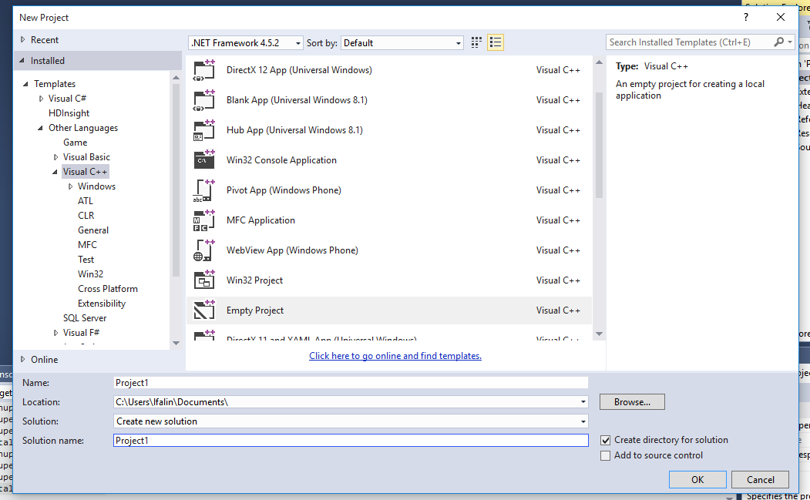

Visual Studio Community Edition
Visual Studio is an integrated development enviroment (IDE), which allows you to write, test, and debug your code. Visual Studio Community Edition is available for free for Windows.
Configuring Visual Studio for OpenGL Development
First, make sure have Visual Studio downloaded and installed on your computer.
When you run the Visual Studio installer, make sure you add support for the C++ language by selecting a Custom installation, then expand the triangle next to the Programming Languages, and check the box next to "Visual C++".
If you have already installed Visual Studio and didn't add support for this, just rerun the installer, click "Modify" and follow the above steps to add support for Visual C++.
Create an Empty C++ Project
Visual Studio has a lot of options and project types. Follow these steps to create an empty C++ project:
From the File menu, hover over New, then select Project.
In the New Project window, navigate to the C++ section. In the center of the window, select the Empty Project template.
At the bottom of the window, type the name of the project. If you wish to save the project in a different location, you may also change that here.
When you are finsihed, press OK
Configure Visual Studio for OpenGL
Once you are able to create a basic C++ project in Visual Studio, you'll want to configure it for OpenGL.
With your project open in Visual Studio, go to the Tools menu, hover over NuGet Package Manager, and select Package Manager Console.
At the bottom of the window, the NuGet Package Manager Console will appear. Click on the prompt (where it says PM>), and type: Install-Package nupengl.core Then press enter.
Please note that the last letter in "nupengl" is a lowercase L, not the number 1.
After a few minutes, if it says Successfully installed 'nupengl.core..., you should be ready to go.
Keep in mind, that you will need to repeat this step any time you create a new OpenGL project in Visual Studio.
Testing Your OpenGL Setup
Create a temporary folder on your desktop, or some other easy-to-find location.
Using MobaXTerm or Filezilla, connect to the Linux Lab, and go to this directory:
/home/cs241/uiTest.Copy all of the files from that directory into the folder you created.
In Visual Studio, right-click on your project, and select "Open Folder in File Explorer...".
A folder will appear that contains the files for your project. Drag the openGL files from the folder you created in step 1, into this folder.
In Visual Studio, right-click on your project, hover over "Add", and select "Existing Item..."
If necessary, navigate to your project folder. By default, this will be in your Documents folder. Select all of the .h and .cpp files, and click Add.
Press F5 to build and start the project.
If everything went well, you should see a window appear containing a spinning shape, which you can control with the arrow keys.

If you see the shape rotating incredibly quickly, you may need to increase the delay between frames. This can be done in the uiInteract.cpp file. Find the lines:
and add an additional amount, such as the following: